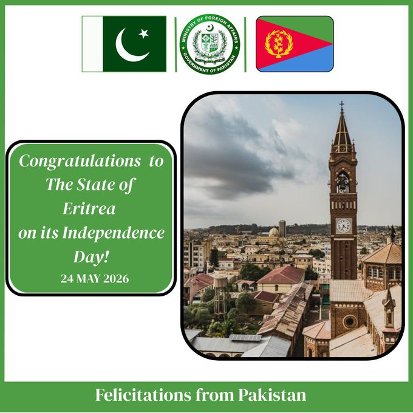

@ForeignOfficePk
📝 原文: Pakistan extends Heartiest felicitations to the Government and people of the State of Eritrea.Happy Independence Day!@Ministersaleh@PakinKenya
🇨🇳 译文: 巴基斯坦向厄立特里亚国政府和人民致以最诚挚的祝贺。独立日快乐！@Ministersaleh@PakinKenya



🕒 2026-05-24T03:00:07+00:00